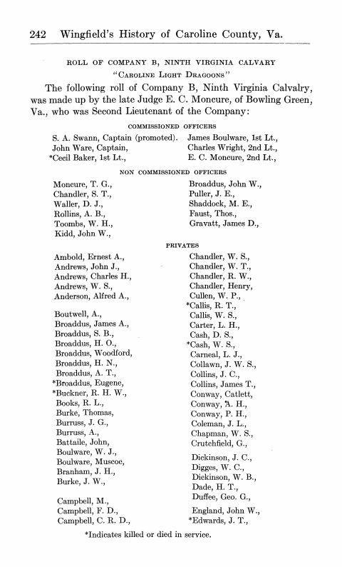

<list>
<head>COMMISSIONED OFFICERS</head>
<item>S. A. Swann, Captain (promoted).</item>
<item>John Ware, Captain,</item>
<item><ref target="n2">*</ref><note id="n2" place="foot"><ns>*</ns><p>Indicates killed or died in service.</p></note>Cecil Baker, 1st Lt.,</item>
<!-- ... -->
</list>
<!-- ... -->
<list>
<head>PRIVATES</head>
<!-- ... -->
<item>Broaddus, A. T.,</item>
<item><ref target="n2">*</ref>Broaddus, Eugene,</item>
<item><ref target="n2">*</ref>Buckner, R. H. W.,</item>
<item>Books, R. L.,</item>
<!-- ... -->
<item>Cullen, W. P.,</item>
<item><ref target="n2">*</ref>Callis, R. T.,</item>
<item>Callis, W. S.,</item>
<item>Carter, L. H.,</item>
<item>Cash, D. S.,</item>
<item><ref target="n2">*</ref>Cash, W. S.,</item>
<item>Carneal, L. J.,</item>
<!-- ... -->
<item>England, John W.,</item>
<item><ref target="n2">*</ref>Edwards, J. T.,</item>